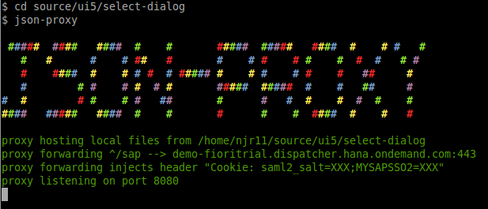

why?
If your SAPUI5 app needs to communicate with a server you can't just open the html file directly in a browser as the ajax calls will fail due the Same Origin Policy enforced by browsers.
We can use a proxy server to get around this problem during development.
how?
SAPUI5 is Javascript development so we're going to use Javascript tools that ultimately means node.js & npm.
json-proxy is a simple proxy server that is easy to setup & configure.
install
npm install -g json-proxy - install globally so it's available in all your projects.
or/and
npm install json-proxy --save - install locally and add the dependancy to your package.json file.
configure
By default json-proxy will look for a config file called json-proxy.json in the directory you are running the server from. We can use this file to configure the forwarding of our ajax calls and even pass on any required authentication headers like a SAP Single Sign On ticket for example.
Create a json-proxy.json file the root of your project.
json-proxy.json
{
"proxy": {
"forward": {
"/sap": "https://demo-fioritrial.dispatcher.hana.ondemand.com"
},
"headers": {
"Cookie": "saml2_salt=XXX;MYSAPSSO2=XXX"
}
}
}
Here we are telling the proxy to forward any request to the local url /sap to the remote address https://demo-fioritrial.dispatcher.hana.ondemand.com. The headers section is also adding an authentication cookie to every request to the remote address.
run
From the console cd into the root of your project directory and run the json-proxy command.You should be greeted with all the colours of the rainbow.
